-
Get behind them
The flock grazes in small groups all over the valley. Swing wide round the far side of one, then walk in: the sheep bunch up and move off, away from Pip. Hold C to creep and they stay calm until you are close; sprint and they bolt.
-
Through the gate
The stone fold by the farmhouse is home. Guide fences funnel the flock to the gate, and every sheep that goes through it gets a gold heart.
-
The sun goes down
The light is the clock. When the sun bar at the top of the screen reaches its red notch, the sun drops behind the ridge and the gold turns to rose.
-
The wolves come out
Wolves slip out of the pines and stalk the stragglers. A red ring marks each one, and a dashed red line runs to the sheep it wants. Keep the flock together and keep it moving.
-
Snatch!
A wolf that reaches a sheep grabs it and drags it off towards the trees, and a banner counts down the seconds. Sprint over, then run at the wolf or bark: it drops the sheep and runs.
-
Over the bridge
The last flock grazes on the far bank. A stream cuts the valley in two and sheep will not swim, so drive them at the bridge or the shallow ford and they file across.
-
Home before dark
Once the day's target is in the fold you can latch the gate and call it a day, or keep herding for more stars. The gate swings shut and Pip trots over to the flock.
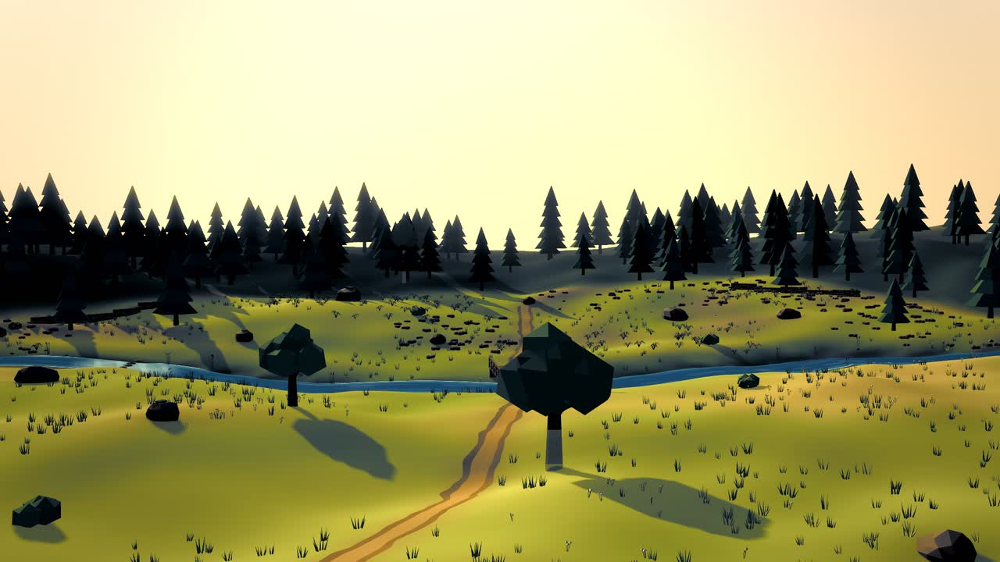
A sheepdog's evening
Woolgather
Herd the flock home before nightfall.
A highland valley at golden hour. Twelve sheep are scattered over the hills.
You are Pip, a border collie, and the sun is going down.
When it sets, the wolves come out of the pines. Bring the flock home before dark.
Free, no install. A desktop browser with a keyboard, or a gamepad.
You steer them by where you stand.
Sheep flee from Pip as a flock. Walk up behind them and they move away from you, together. Stand off to one side and they drift the other way; go wide round the far side and they come back towards you.
So you never push one sheep at a time. You put yourself in the right place, creep in quietly, and the whole flock goes where you want it: over the bridge, through the gate, home.
Try it on the right: you are the dog.
All ten home before dark.
A season on the hill
Ten evenings on one hill farm, midsummer to the first snow, over five places. Each one brings a new thing to herd around, and none of them is a walkover: the evenings are short, the wolves come early, and from Old Angus on they hunt in pairs.
-
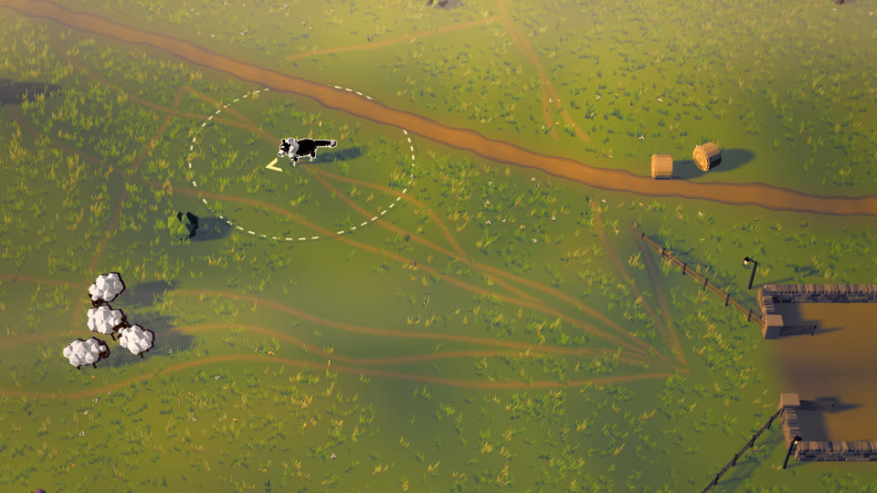
Long Light
Two flocks, one fold, and a wolf that comes early. Learn the ring, creeping and the gate.
-
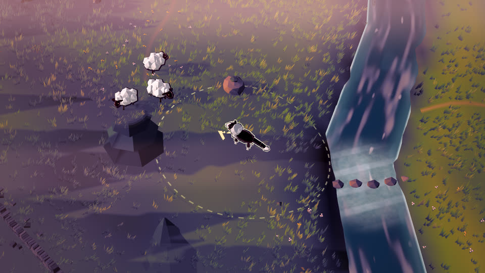
The Far Bank
The flock is over the stream. Sheep will not swim: line them up on the bridge or the ford.
-
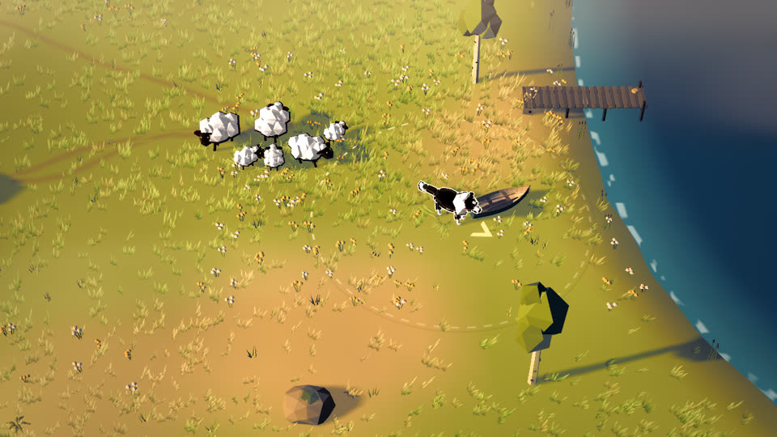
Lambing Time
Lambs follow their mothers, and one is lost somewhere on the hill, bleating.
-
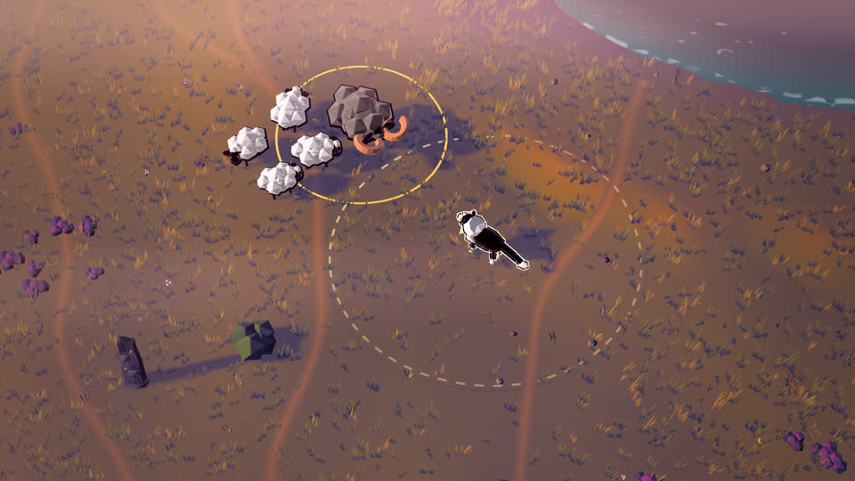
Old Angus
The ram will not be pushed: stare him down. And from tonight the wolves hunt in pairs.
-
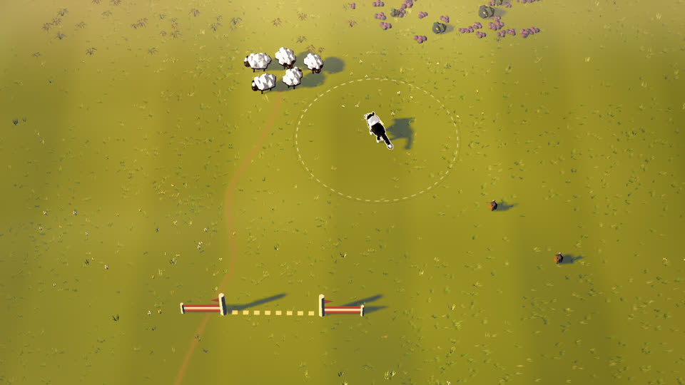
The Glenbrae Trial
A sheepdog trial in front of a crowd: three gates in order and a small pen, judged on points.
-
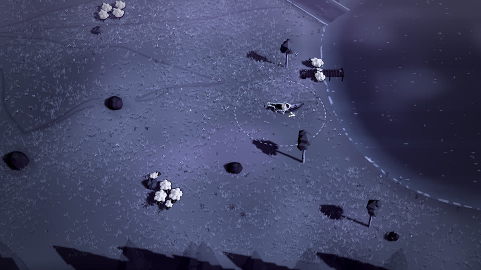
Night Watch
No fold tonight. Keep the flock together in the dark until dawn, while the pack circles.
-
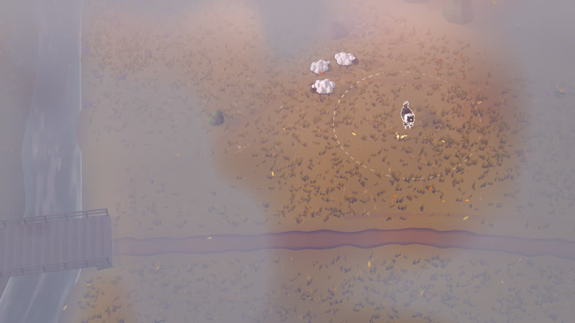
Mist on the Moor
You can only see a little way. Find the flock by its bleating, and the black sheep that bolts.
-
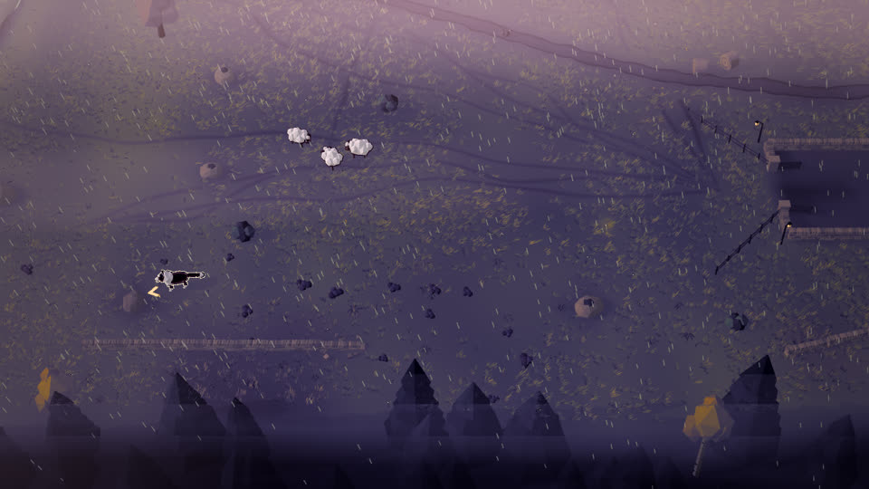
The Storm
Thunder scatters the flock, and halfway through the evening the ford floods.
-
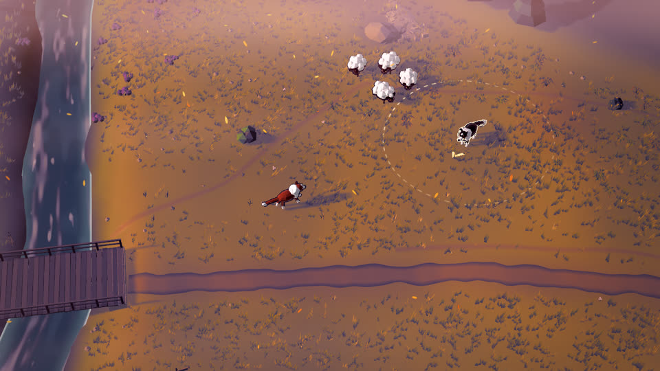
The Gathering
Every flock on the hill comes down for winter, and Old Fly, Pip’s mother, comes to help.
-
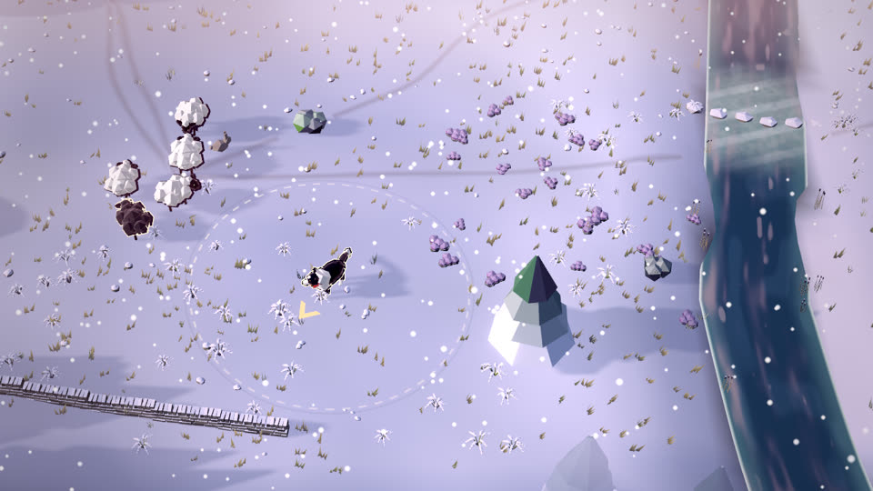
First Snow
Snow on the hills, the hungriest pack, and everything at once.
Easy, Standard, Hard
Choose how hard the season is. Harder means more to think about: old greys that take two barks, young wolves that come back, wolves that hunt in pairs, and evenings that bring back what came before.
☾ Wolf Moon
Three stars on an evening opens its Wolf Moon: the same evening, shorter, with one more wolf, the whole pack and one more sheep to bring home.
Charms
Stars buy charms. Some are small edges; three change how you play: the outrun, Old Fly who holds a gap for you, and a bell-wether the flock keeps close to.
Today's evening
A new evening every day, made from the date: a place, the real season, the weather and two or three flocks. Pip's coats are won with ribbons and Wolf Moon stars, and once the whole season is won, something unexpected offers to herd.
How an evening goes
One valley and one long sunset. Every clip is the finished game, filmed one frame at a time while a test bot played it with real key presses. The time beside each one is how far into the evening it happens.
Watch a whole evening
The same test bot on Standard, from the first second to the last sheep, uncut. It herds like an old hand, so it beats the dark with time to spare. Standard gives you six minutes of light.
And when the dark wins
Night falls when the sun bar runs out. If the day's target is not in the fold by then, the day is lost, and the card says where the wolves took your sheep and what to try next time.
The classic evening (the one filmed here) comes at three lengths. Gentle is a long, slow sunset with few wolves. Standard is the way the old shepherds tell it. Hard is a short evening and a hungry pack.
From grey boxes to the finished valley
The game was built in five milestones. After each one a script played it with real key presses and took screenshots at the same moments, so the stages line up. Drag the line to compare the first greybox with the finished game.
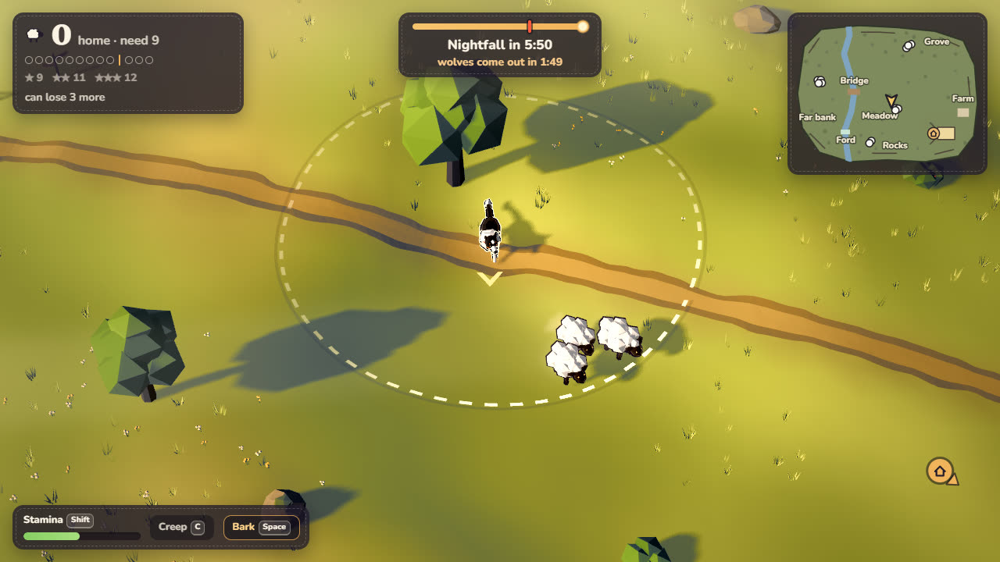
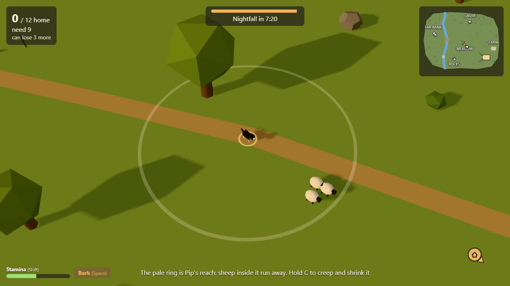
Greybox, milestone 1 FinishedControls
Movement follows the screen, and the camera always looks up the valley, so "get behind the flock" means the same thing all evening.
| Keyboard | Action | Gamepad |
|---|---|---|
| WASDorArrows | Move | Left stick |
| Shift | Sprint, while the stamina lasts | RT or RB |
| Chold | Creep: sheep stay calm until you are close | LT or LB |
| SpaceorB | Bark: startles sheep, scares wolves off | A or X |
| Enter | Latch the gate, once the target is met | Y |
| EscorP | Pause, sound and graphics | Start |
| M | Sound on or off | Pause menu |
Read the valley
- Gold house. The fold, home. A marker at the edge of the screen points the way.
- Sheep. The nearest stray, when none are in view.
- Wolf head. A wolf on the hunt.
- Red alarm. A sheep in a wolf's jaws. Go now.
- Dashed ring round Pip. Pip's reach: sheep inside it move away.
- Red ring. A wolf. A dashed red line runs to the sheep it is after.
The counter at the top left has a dot for every sheep: filled when it is home, struck through in red when a wolf has taken it. The sun bar at the top counts down to nightfall, with a red notch where the wolves come out.
How it was made
Woolgather was built by Claude (Opus 5.5) from a single prompt, the third game in a series of one-shot builds. Nothing was downloaded: every model is a Python script run in Blender, every colour is a material or a shader, and every sound, the music included, is synthesized in the browser while you play.
-
1Greybox
The whole loop in primitive shapes: flocking, the fold, wolves at dusk, winning and losing.
9 critic rounds
-
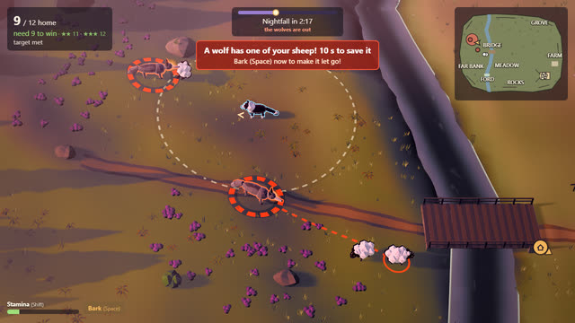
2Models
Pip, the flock, the wolves, the valley, the fold and the farmhouse, each built by a Blender script.
30 critic rounds
-
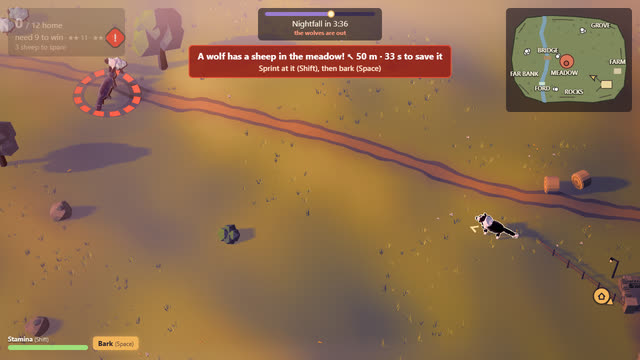
3Feel
Gaits for every animal, the camera, dust, splashes, hearts, fireflies, sound and music.
5 critic rounds
-
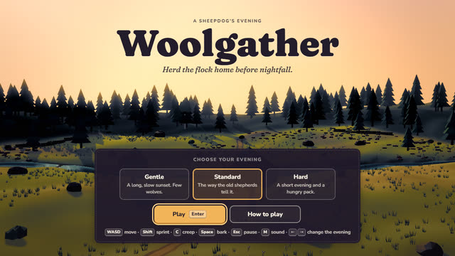
4Interface
Title, how to play, the HUD, pause and the end of the day, in one stitched-felt look.
2 critic rounds
-
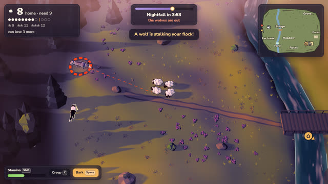
5Polish
A steady frame rate, graphics settings that step down on slower machines, zero console errors.
6 critic rounds
The critic loop
After every milestone a script played the game with real key presses and saved screenshots from the player's camera. A separate reviewer, which saw only those screenshots and a one-paragraph pitch and never the code, listed the five worst problems a player would notice. They were fixed and the loop ran again, until the worst problem left was a minor one.
Most of the 52 rounds went into one thing: making a sunset read as a sunset. Gold, then rose, then violet, then moonlight, without the grass turning brown on the way.
- Engine
- Three.js on WebGL2 with TypeScript and Vite: soft shadows, an HDR image graded through the evening, bloom, and graphics settings that step down on their own on slower machines
- Models
- Five Blender scripts, one per asset family, about 2 MB of glTF in all
- Sound
- Web Audio synthesis: barks, bleats, howls, the wind and the stream, and a folk tune whose tension follows the wolves
- Flock
- Sheep that graze, bunch and flee as a group. The test bot herds them the way real sheepdogs do, gathering from behind and driving